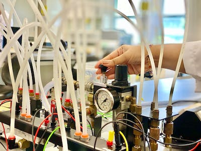
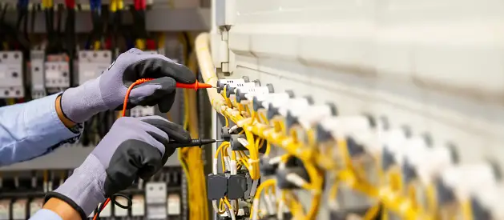
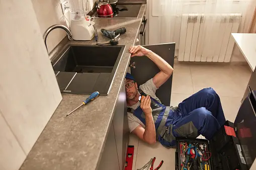

NOS SERVICES
Chez DIFE, notre mission est de vous simplifier la gestion de l'humidité industrielle. Nous offrons une gamme complète de services conçus pour répondre à vos besoins spécifiques, que vous opériez dans l'agroalimentaire, le pharmaceutique, la construction ou toute autre industrie exigeante. • Vente d'Appareils d'Humidité de Pointe :Nous sommes votre source fiable pour l'achat d'appareils d'humidité de haute qualité. Nos produits sont soigneusement sélectionnés pour répondre aux normes les plus strictes de l'industrie et garantir des performances exceptionnelles. Par exemple, nos capteurs d'humidité de précision sont indispensables pour maintenir la qualité des produits alimentaires tout au long de la chaîne d'approvisionnement. • Installation Expertise :
Une installation précise est essentielle pour garantir le bon fonctionnement de vos appareils. Nos équipes d'experts qualifiés veillent à ce que chaque appareil soit correctement installé, configuré et calibré pour répondre à vos besoins spécifiques. Par exemple, dans le secteur pharmaceutique, nous installons des systèmes d'humidité qui garantissent que les médicaments restent stables et efficaces.  • Dépannage Rapide et Efficace :
Les pannes imprévues peuvent entraîner des temps d'arrêt coûteux. Notre service de dépannage réactif est disponible pour diagnostiquer et résoudre rapidement tout problème lié à vos appareils d'humidité industrielle. Par exemple, en cas de dysfonctionnement d'un système de contrôle d'humidité dans une usine de production alimentaire, notre équipe intervient rapidement pour minimiser les perturbations de la production.  • Maintenance Préventive :
Pour éviter les pannes coûteuses et les interruptions de production, nous proposons des programmes de maintenance préventive sur mesure. Nous surveillons régulièrement et entretenons vos appareils d'humidité pour assurer leur fiabilité à long terme. Par exemple, dans le secteur de la construction, notre maintenance préventive permet de prolonger la durée de vie des équipements sensibles à l'humidité.  Chez DIFE, notre engagement envers l'excellence et notre expertise en gestion de l'humidité industrielle font de nous votre partenaire idéal pour garantir la qualité, la sécurité et la fiabilité de vos opérations. Explorez nos services pour découvrir comment nous pouvons répondre à vos besoins spécifiques et optimiser votre gestion de l'humidité industrielle. Pour toute information sur les prix des services ou certaines éclaircissement et autres, prière de nous contacter dans la section CONTACT.